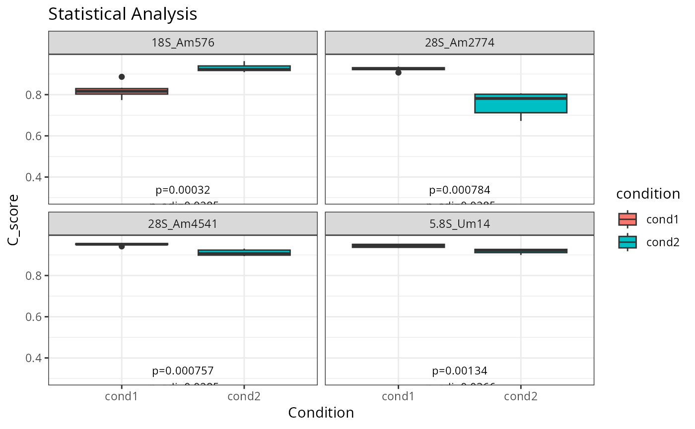

Print Welch result in report
Examples
data("ribo_toy")
data("human_methylated")
ribo_toy <- remove_ribo_samples(ribo_toy,c("RNA1", "RNA2"))
ribo_toy <- rename_rna(ribo_toy)
ribo_toy <- annotate_site(ribo_toy,
annot = human_methylated,
anno_rna = "rRNA",
anno_pos = "Position",
anno_value = "Nomenclature")
comparisons <- tibble::tibble(comp = c("comp1"),
ctrl = c("cond1"),
cases = c("cond2") )
ctrl <- comparisons$ctrl
cases <- comparisons$cases
render_html_welch(ribo_toy, "condition", ctrl, cases, pthr = 0.05, cscore_cutoff = 0.05)
#> $ui
#> <h4>cond2 vs cond1</h4>
#> <div class="datatables html-widget html-fill-item" id="htmlwidget-ac96cb3ee4656e2e9ec3" style="width:100%;height:auto;"></div>
#> <script type="application/json" data-for="htmlwidget-ac96cb3ee4656e2e9ec3">{"x":{"filter":"none","vertical":false,"extensions":["Buttons"],"data":[["18S_Am1031","18S_Am1383","18S_Am159","18S_Am166","18S_Am1678","18S_Am27","18S_Am468","18S_Am484","18S_Am512","18S_Am576","18S_Am590","18S_Am668","18S_Am99","18S_Cm1272","18S_Cm1391","18S_Cm1703","18S_Cm174","18S_Cm462","18S_Cm517","18S_Cm621","18S_Cm797","18S_Gm1328","18S_Gm1447","18S_Gm1490","18S_Gm436","18S_Gm509","18S_Gm601","18S_Gm644","18S_Gm683","18S_Gm867","18S_Um116","18S_Um121","18S_Um1288","18S_Um1326","18S_Um1442","18S_Um1668","18S_Um172","18S_Um1804","18S_Um354","18S_Um428","18S_Um627","18S_Um799","28S_Am1310","28S_Am1313","28S_Am1511","28S_Am1521","28S_Am1858","28S_Am2350","28S_Am2388","28S_Am2774","28S_Am2802","28S_Am3697","28S_Am3703","28S_Am3739","28S_Am3764","28S_Am3804","28S_Am3809","28S_Am3846","28S_Am389","28S_Am391","28S_Am4493","28S_Am4541","28S_Am4560","28S_Cm1327","28S_Cm1868","28S_Cm2338","28S_Cm2352","28S_Cm2409","28S_Cm2791","28S_Cm2811","28S_Cm2848","28S_Cm3680","28S_Cm3787","28S_Cm3820","28S_Cm3848","28S_Cm3866","28S_Cm4032","28S_Cm4426","28S_Cm4506","28S_Gm1303","28S_Gm1509","28S_Gm1612","28S_Gm1747","28S_Gm2351","28S_Gm2411","28S_Gm2863","28S_Gm3606","28S_Gm3723","28S_Gm3771","28S_Gm3878","28S_Gm3923","28S_Gm4020","28S_Gm4166","28S_Gm4198","28S_Gm4340","28S_Gm4362","28S_Gm4464","28S_Gm4469","28S_Gm4588","28S_Gm4593","28S_Gm4607","28S_Um1760","28S_Um2402","28S_Um2824","28S_Um3797","28S_Um3904","28S_Um4197","28S_Um4276","28S_Um4468","28S_Um4590","5.8S_Gm75","5.8S_Um14"],["4.813e-01","3.907e-01","7.077e-01","1.725e-01","2.417e-01","3.655e-01","4.582e-01","3.748e-01","9.410e-01","3.198e-04","9.499e-01","4.630e-01","2.233e-01","9.991e-03","3.865e-03","6.766e-01","2.423e-01","2.944e-01","9.569e-01"," NaN","7.797e-01","2.215e-01","7.178e-02","1.343e-01","2.627e-01","6.535e-01","7.799e-02","1.600e-01","6.459e-01","1.413e-01","7.865e-03","3.252e-01","1.342e-01","7.826e-01","2.335e-03"," NaN","4.296e-01","7.893e-01","7.759e-02","8.187e-01","7.599e-01","3.489e-01","9.397e-01","3.368e-01","9.371e-01","2.299e-01","3.977e-01","2.237e-01","5.001e-02","7.837e-04","9.916e-02","3.080e-01","1.494e-01","5.734e-01","3.558e-01","1.886e-01","1.625e-01","1.297e-02","6.424e-01","9.079e-02","8.813e-01","7.574e-04","6.705e-03","4.277e-03","1.948e-02","1.706e-01","6.509e-02","6.137e-02","1.575e-02","1.787e-01","6.319e-03","8.001e-01","4.748e-01","1.004e-02","6.812e-02","2.623e-01","4.265e-01","1.885e-01","2.676e-01","1.832e-02","2.922e-01","2.897e-02","4.647e-01","4.116e-01","1.176e-01","6.348e-01","1.301e-01","3.949e-01","2.362e-01","9.776e-01","1.970e-01","1.022e-01","9.288e-01","1.153e-01","1.752e-02","9.609e-01","2.829e-01","1.502e-01","1.017e-01","8.141e-03","1.440e-02"," NaN","1.550e-02","3.403e-01","7.586e-01","6.510e-01","5.702e-01","2.142e-01","5.207e-01","3.456e-01","6.065e-01","1.345e-03"],[0.002,0.001,0.001,0.005,0.008,0.004,0.003,0.005,0,0.109,0,0.005,0.004,0.08599999999999999,0.042,0.001,0.032,0.005,0,0,0.001,0.003,0.09,0.004,0.01,0.002,0.006,0.005,0.003,0.018,0.029,0.005,0.008999999999999999,0.001,0.019,0,0.004,0.001,0.01,0.002,0.001,0.005,0,0.016,0,0.003,0.006,0.005,0.017,0.168,0.008999999999999999,0.01,0.018,0.001,0.019,0.008,0.023,0.012,0.005,0.005,0.002,0.041,0.038,0.048,0.105,0.011,0.023,0.016,0.028,0.005,0.065,0.002,0.011,0.018,0.018,0.002,0.004,0.041,0.002,0.063,0.004,0.002,0.001,0.003,0.014,0.015,0.049,0.019,0.002,0,0.02,0.064,0,0.007,0.021,0,0.02,0.018,0.08500000000000001,0.155,0.166,0,0.048,0.005,0.001,0.002,0.001,0.005,0.002,0.053,0.002,0.026],["6.398e-01","5.858e-01","8.294e-01","4.274e-01","4.716e-01","5.692e-01","6.332e-01","5.754e-01","9.698e-01","2.848e-02","9.698e-01","6.332e-01","4.690e-01","8.422e-02","6.660e-02","8.016e-01","4.716e-01","5.175e-01","9.698e-01"," NaN","8.778e-01","4.690e-01","3.009e-01","3.957e-01","4.937e-01","7.828e-01","3.036e-01","4.218e-01","7.828e-01","4.053e-01","8.067e-02","5.539e-01","3.957e-01","8.778e-01","5.091e-02"," NaN","6.081e-01","8.778e-01","3.036e-01","8.924e-01","8.719e-01","5.592e-01","9.698e-01","5.592e-01","9.698e-01","4.716e-01","5.858e-01","4.690e-01","2.478e-01","2.848e-02","3.483e-01","5.328e-01","4.093e-01","7.353e-01","5.620e-01","4.374e-01","4.218e-01","1.010e-01","7.828e-01","3.412e-01","9.511e-01","2.848e-02","8.067e-02","6.660e-02","1.061e-01","4.274e-01","2.956e-01","2.908e-01","1.010e-01","4.327e-01","8.067e-02","8.810e-01","6.389e-01","8.422e-02","2.970e-01","4.937e-01","6.081e-01","4.374e-01","4.943e-01","1.051e-01","5.175e-01","1.504e-01","6.332e-01","5.982e-01","3.771e-01","7.828e-01","3.957e-01","5.858e-01","4.716e-01","9.776e-01","4.474e-01","3.483e-01","9.698e-01","3.771e-01","1.051e-01","9.698e-01","5.139e-01","4.093e-01","3.483e-01","8.067e-02","1.010e-01"," NaN","1.010e-01","5.592e-01","8.719e-01","7.828e-01","7.353e-01","4.690e-01","6.838e-01","5.592e-01","7.688e-01","3.664e-02"]],"container":"<table class=\"display\">\n <thead>\n <tr>\n <th>annotated_sites<\/th>\n <th>p_value<\/th>\n <th>delta_c_score<\/th>\n <th>p_adj<\/th>\n <\/tr>\n <\/thead>\n<\/table>","options":{"pageLength":20,"scrollX":true,"dom":"Bfrtip","buttons":[{"extend":"csv","filename":"summary_table_of_Welch_test"},{"extend":"excel","filename":"summary_table_of_Welch_test"},{"extend":"pdf","filename":"summary_table_of_Welch_test"}],"columnDefs":[{"className":"dt-right","targets":2},{"name":"annotated_sites","targets":0},{"name":"p_value","targets":1},{"name":"delta_c_score","targets":2},{"name":"p_adj","targets":3}],"order":[],"autoWidth":false,"orderClasses":false,"lengthMenu":[10,20,25,50,100]},"selection":{"mode":"multiple","selected":null,"target":"row","selectable":null}},"evals":[],"jsHooks":[]}</script>
#> <p>This panel displays boxplots of C-scores for rRNA 2'Ome sites identified
#> as significantly different between the two biological conditions cond2
#> and cond1, based on Welch's t-test results. Significance was defined by
#> two criteria: adjusted p-value < 0.05 and |deltaC-score| > 0.05. Each boxplot
#> shows the distribution of C-scores per condition, based on the summary
#> table presented above. Colors are attributed to each biological group,
#> enabling visual comparison of 2'Ome levels between conditions.</p>
#>
#> $plot

#>